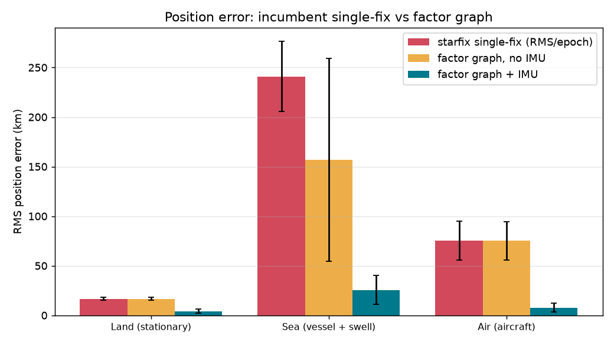
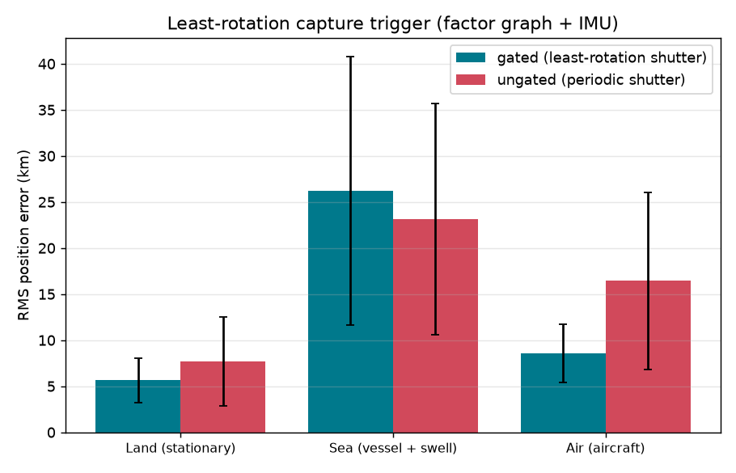
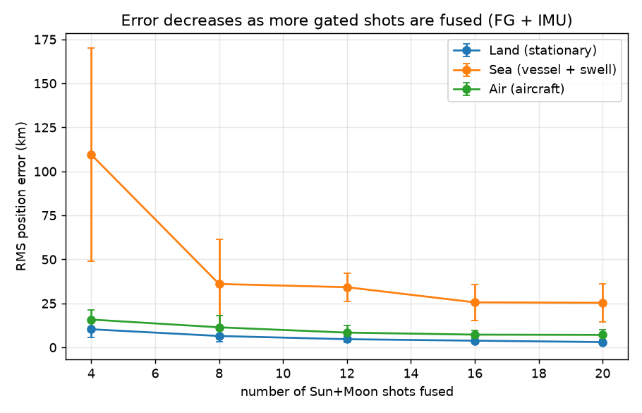
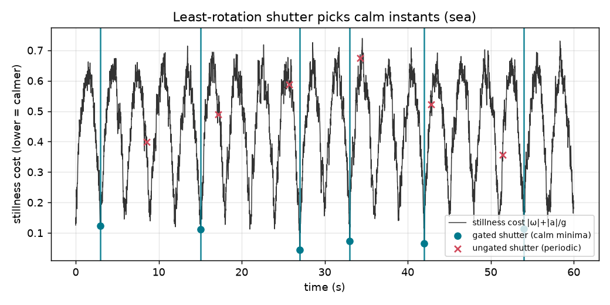
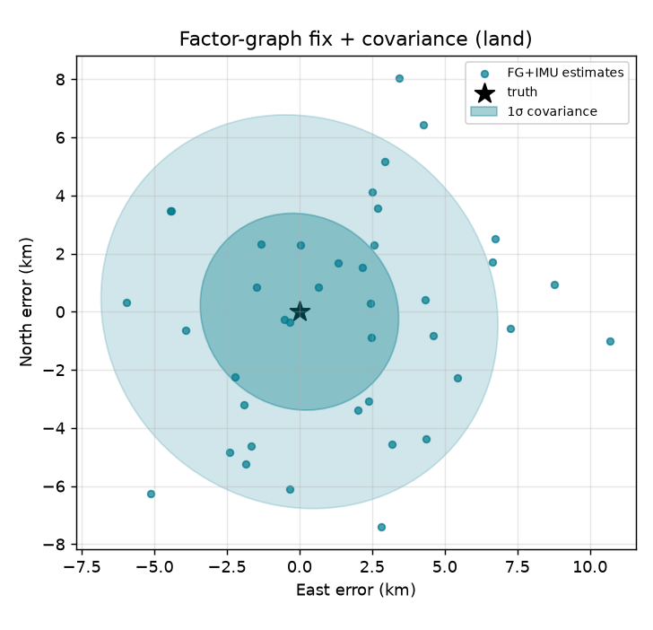

8 seeds RMS horizontal position error (km), mean ± std.
| Regime | starfix single-fix | Factor graph, no IMU | Factor graph + IMU |
|---|---|---|---|
| Land (stationary) | 16.7 ± 1.5 | 16.7 ± 1.5 | 4.1 ± 2.1 |
| Sea (vessel + swell) | 241.0 ± 35.2 | 157.1 ± 102.4 | 25.4 ± 14.6 |
| Air (aircraft) | 75.5 ± 19.7 | 75.1 ± 19.3 | 7.7 ± 4.4 |
Firing the shutter at the calmest instants lowers the synthetic-horizon tilt error 3–6×. That converts to ≈2× lower fix error on land and in the air; at sea even the calmest swell instant is too tilted, so the swell floor dominates and a gimbal/mount is needed.
| Regime | gated σ | ungated σ | gated fix | ungated fix |
|---|---|---|---|---|
| Land (stationary) | 6.4′ | 18.1′ | 5.7 ± 2.4 | 7.7 ± 4.8 |
| Sea (vessel + swell) | 95.9′ | 402.6′ | 26.2 ± 14.5 | 23.1 ± 12.5 |
| Air (aircraft) | 22.2′ | 138.3′ | 8.6 ± 3.1 | 16.4 ± 9.6 |





The phone is a digital theodolite: its IMU gives the local vertical (a gravity-derived artificial horizon, no sea-horizon dip) and the camera gives the direction to the Sun and Moon. Each shot yields two altitude lines of position; GTSAM fuses them across shots, linked by IMU preintegration, into one trajectory with a covariance. A single hand-held phone sight is weak (~6–70′ of horizon tilt); the win comes from fusing many calm shots.